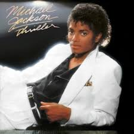
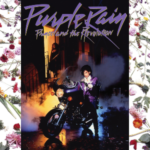

📝 Eseji i Pogledi
Analize albuma i uticaja muzičkih velikana:
-

„Thriller“ – zašto je to najprodavaniji album svih vremena? Michael Jackson je redefinisao muzičku produkciju, ples i vizualni identitet izvođača. „Thriller“ je spoj popa, funka i horor atmosfere, sa revolucionarnim spotom koji je promenio MTV zauvek.
Michael Jackson je sa albumom Thriller 1982. godine ne samo pomerio granice pop muzike, već ih je srušio. Kombinujući pop, funk, R&B, rock i elemente horor atmosfere, Thriller je postao kulturni fenomen. Producent Quincy Jones pomogao je u stvaranju albuma koji je tehnički besprekoran, dok je Michael svojim glasom i performansom dao dušu svakom tonu. Pesme poput „Billie Jean“, „Beat It“ i „Thriller“ nisu bile samo hitovi – postale su deo globalnog identiteta. Spot za naslovnu numeru promenio je tok MTV-ja: dugačak, filmski, narativan video bio je nešto što do tada nije viđeno. Thriller je pokazao svetu da pop može biti i umetnički dubok i komercijalno uspešan — i zato je i danas standard koji se meri.
-

„What's Going On“ – Marvin Gaye i politička snaga soula. Album je glas generacije, sa temama rata, ekologije i društvene nepravde. Njegova mekoća u vokalu nije oslabila poruku – naprotiv, učinila je protest emotivnijim i ličnijim.
Kada je Marvin Gaye 1971. objavio What’s Going On, promenio je ulogu soul muzike zauvek. Umesto pesama o ljubavi i zabavi, Gaye se usudio da postavi pitanja o ratu, siromaštvu, rasizmu i degradaciji životne sredine. Album je bio reakcija na Vijetnamski rat i unutrašnje nemire u SAD, ali je njegova poruka univerzalna i bezvremenska. Pesme poput „Mercy Mercy Me (The Ecology)“ i „Inner City Blues“ bile su iskren pogled umetnika koji više nije mogao da ćuti. Muzički, album je sofisticiran, nežan i gotovo spiritualan. Gaye koristi slojevite aranžmane, falset vokale i fluidan narativ koji povezuje sve pesme u celinu. What’s Going On je prvi soul koncept-album koji je pokazao da duša nije samo emocija — već i svest.
-

„The Miseducation of Lauryn Hill“ – emocionalna istina u svakoj pesmi. Ovaj album kombinuje soul, hip-hop i gospel u ličnu ispovest o ljubavi, veri, ženskoj snazi i ranjivosti. Lauryn Hill je pokazala kako introspekcija može postati univerzalna poruka.
Debi i jedini solo album Lauryn Hill iz 1998. godine je poput dnevnika: sirov, iskren i prelep. The Miseducation of Lauryn Hill je spoj soula, hip-hopa, reggaea i R&B-a, sa duboko ličnim tekstovima o ljubavi, majčinstvu, veri i samoprihvatanju. Hill piše i peva sa autentičnošću koja pogađa direktno u srce. Pesme poput „Ex-Factor“, „Doo Wop (That Thing)“ i „To Zion“ govore o ranjivosti, snazi žene i duhovnom putu. U vremenu kada su muzičke zvezde bile pod pritiskom da budu komercijalne mašine, Hill je ponudila umetničku istinu. Album je postao klasik jer nudi više od muzike — nudi iskustvo duše, introspektivno putovanje koje se oseća istinito i danas kao i tada. Nije to samo album — to je lekcija iz autentičnosti.
-

„Purple Rain“ – Princeova magija i revolucija u muzici. Album i film zajedno su predstavljali umetnički manifest. Kombinujući rock, funk, pop i erotiku, Prince je stvorio jedno od najvažnijih dela 80-ih i pokazao kako umetnik može biti i muzičar, glumac i režiser svoje vizije.
Objavljen 1984. godine, Purple Rain nije bio samo album – to je bio umetnički manifest. Prince je ovim delom postavio novu granicu između muzičkog izraza i vizuelnog identiteta, jer je istovremeno objavio i film pod istim imenom. Kombinujući elemente rocka, funka, popa i R&B-a, Prince je stvorio eksplozivni spoj žanrova koji je bio istovremeno sirov i elegantan. Pesme poput „When Doves Cry“, „Let’s Go Crazy“ i naslovna numera „Purple Rain“ pokazale su njegovu svestranost – od virtuoznih gitarskih sola do duboko emotivnih balada. Ono što izdvaja Purple Rain jeste Princeova sposobnost da bude i ranjiv i snažan, senzualan i duhovan. Bio je jedan od retkih izvođača koji je mogao da spoji ekstremnu umetničku slobodu s masovnim uspehom – i da pri tom zadrži kompletnu kontrolu. Ovaj album je postao kulturni simbol 80-ih i jedno od najvažnijih muzičkih dela u istoriji popularne muzike.
-

„Blue“ – Joni Mitchell i njena iskrena poetska ekspresija. Ovaj album je intimni dnevnik u muzičkom obliku. Bez filtera i pretvaranja, Joni Mitchell piše o ljubavi, gubitku i samoći s ranjivošću i snagom koja je retko viđena u popularnoj muzici.
Kada je Joni Mitchell 1971. objavila Blue, otvorila je vrata u svet sirove, ogoljene emocije kakva se retko viđa u popularnoj muzici. Ovaj album nije bio samo zbir pesama – bio je njena duša pretočena u note i reči. Kroz numere poput „A Case of You“, „River“ i „All I Want“, Mitchell govori o ljubavi, gubitku, slobodi i ličnom identitetu sa poetskom preciznošću i emotivnom dubinom. Njena muzika je minimalistička, često zasnovana samo na klaviru ili gitari, ali upravo ta jednostavnost dopušta njenom glasu i rečima da nose svu težinu osećanja. Blue je postao svetionik za sve kantautore koji su došli posle nje, posebno žene, jer je pokazao da se ranjivost može pretvoriti u umetnost, a lična ispovest u univerzalnu priču. Ovaj album se i danas smatra jednim od najvažnijih i najiskrenijih muzičkih zapisa ikada snimljenih.